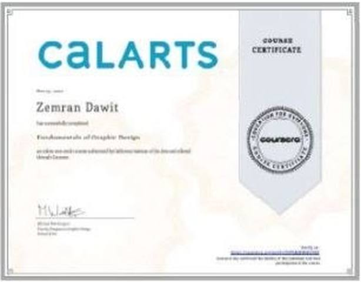
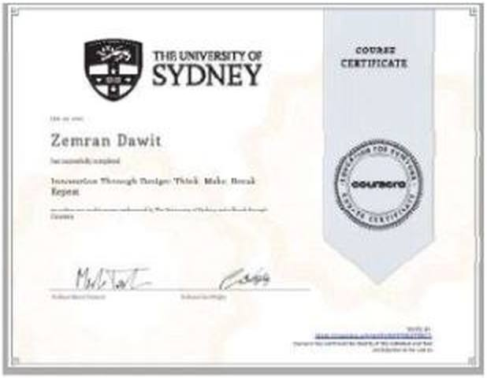
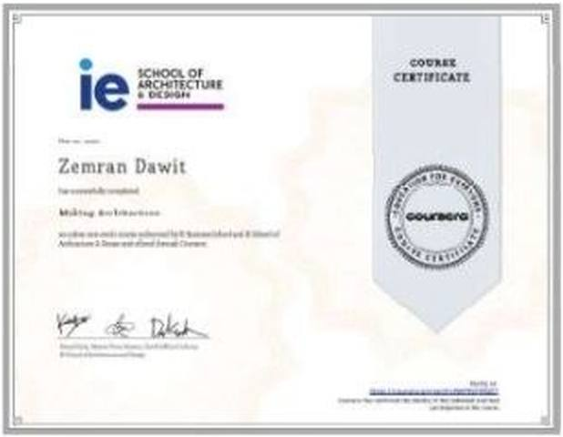
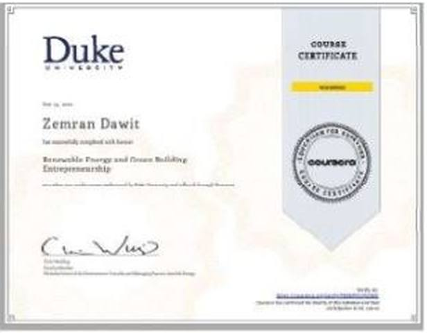
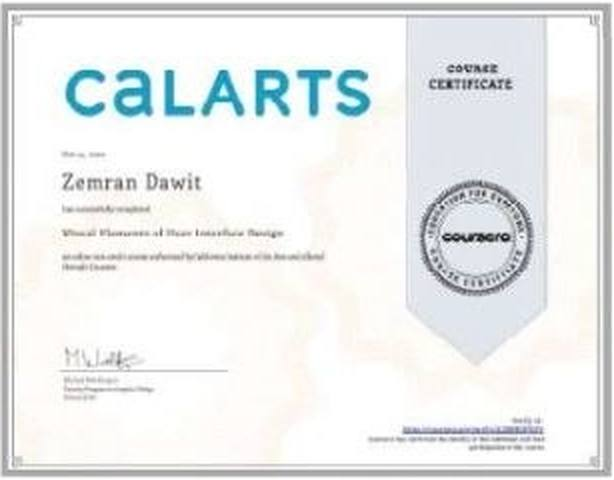
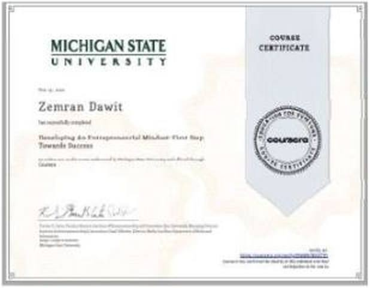
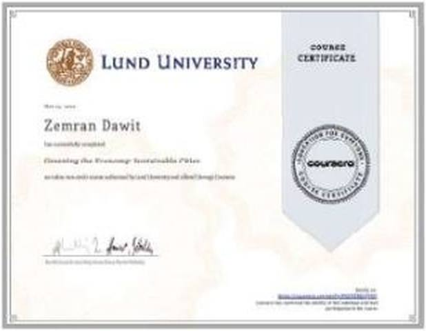
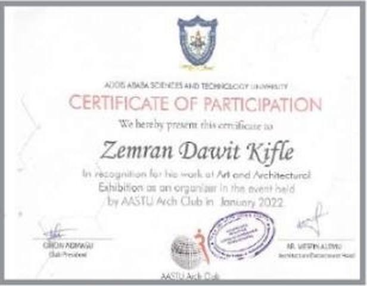

Certificates
Courses and awards
Online courses completed through Coursera, plus a certificate from the AASTU Arch Club for organising an art and architecture exhibition. Scroll sideways.

CalArts

The University of Sydney

IE School of Architecture and Design

Duke University

CalArts

Michigan State University

Lund University

AASTU Arch Club